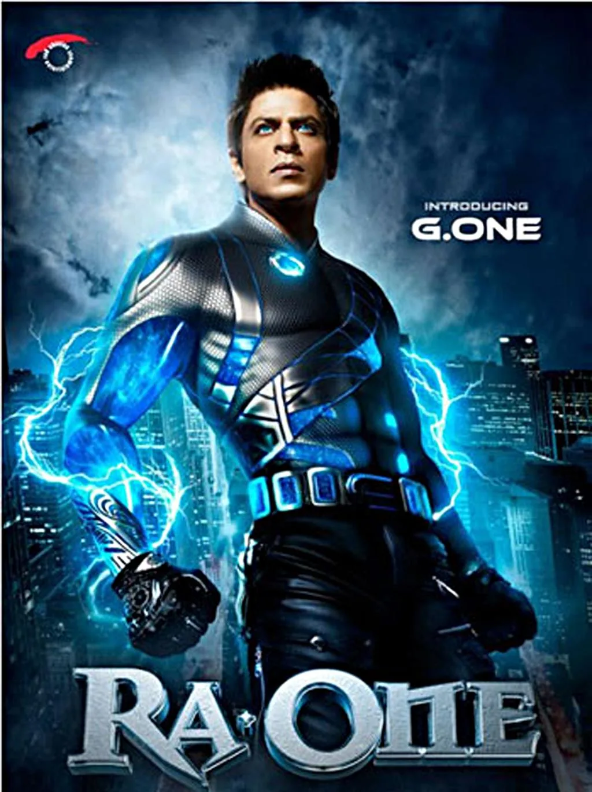
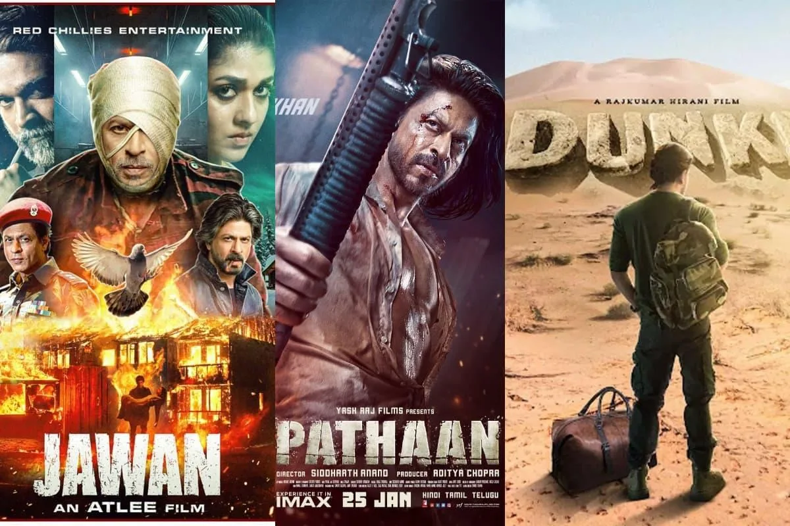

The Final Thesis · section 9 of 92
THE SILENCE BEFORE THE KING
From ZERO to PATHAAN, JAWAAN and DUNKI — the digital innovation gap, Aryan's arrest, and the making of a resurrection narrative
A cinematic industry case study · 2011–2026 · The Shah Rukh Khan digital marketing and brand evolution story



5
What happens when a man who helped turn film marketing into an interactive technology experience goes quiet on innovation, faces a family crisis in public, and returns with three films that reset his commercial scale? And after all that, what might he be preparing for KING?
The story you are building has four acts:
The innovation years: RA.ONE, G.ONE and Chennai Express establish a > benchmark for technology-led storytelling, merchandising, and fan > participation.
The silence and rupture: ZERO, the period around Aryan Khan's > arrest, and the public absence of the earlier digital > experimentation.
The resurrection: Pathaan, Jawan and Dunki, followed by the global > brand, business, and fan phenomenon.
The mystery of KING: A possible return to the very intersection of > technology, fandom, and storytelling that defined the earlier > campaigns.
The headline is deliberately a question of creative history and an invitation to investigate—not a claim that private events caused a particular business decision or that a new campaign has already been secretly planned.